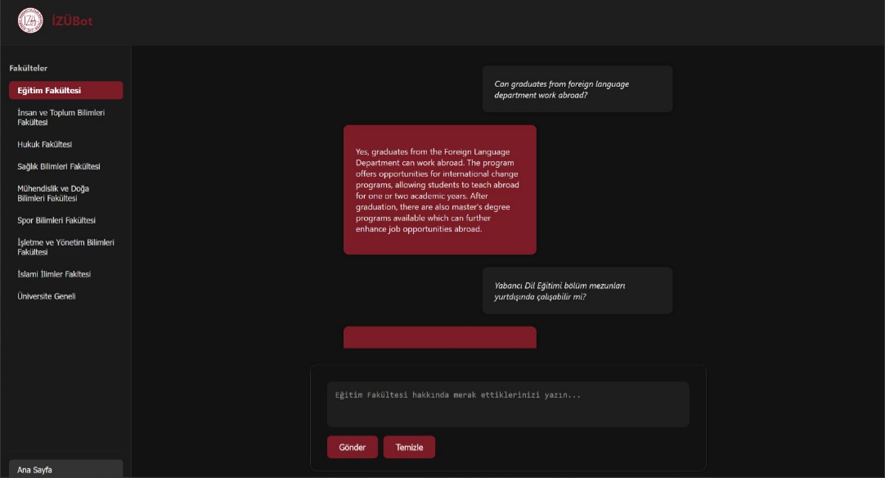

Overview
IZUBot is a web-based semantic search question-answering chatbot developed for Istanbul Sabahattin Zaim University. It uses multilingual MiniLM sentence embeddings and FAISS indexes built separately for each faculty to match student questions with the most relevant FAQ entries. The backend is implemented with FastAPI and integrates with an LLM (Mistral via Ollama) to generate fluent, context-aware answers over a REST API.
Key Features
- Faculty-specific semantic search using multilingual MiniLM embeddings and FAISS indexes.
- End-to-end pipeline from Excel-based Q&A data to vectorization, indexing, and persistent storage.
- FastAPI backend with a dedicated
/askendpoint that loads .faiss and .pkl files at startup and routes queries to the LLM. - Structured JSON responses with answer text and timing information for easy integration with web and future mobile frontends.
Gallery
